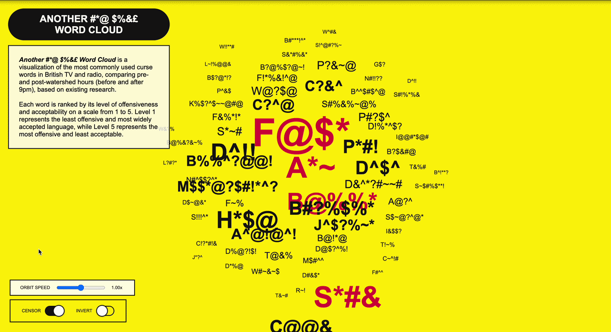

Jan 21, 2026 | Wednesday
What is my definition of collapse? Collapse is the disintegration of a system
or physical form from within.

Types of systems capable of experiencing collapse:
Mental
Emotional
physical
Environmental
Academic
Government
Political
Social
Cultural
Financial
Professional
Jan 26, 2026 | Monday
What is my definition of collapse? Collapse is the disintegration of a system
or physical form from within.
On a snow day, society became still and silent; people stayed inside.
The collapse of comfort shifted into a state of worry. On the other hand,
I went outside for a walk before making my way to the store for groceries
and essentials. I find the snow pleasant—relaxing yet energetic. It’s
interesting to witness how people react and panic over something that has
occurred in the past. I begin to question whether it’s a generational thing,
our reactions influenced by major events, the temporary collapse of human comfort,
whether local or international.
Apr 05, 2026 | Sunday
WHITNEY BIENNIAL critical blog response

Continuous Fractures Generating New Yields
Walking into the sixth floor of the Whitney Museum of American Art, I was immediately drawn to a large
structural installation by CFGNY.
The installation, "Continuous Fractures Generating New Yields," is composed of wooden boards and translucent
plastic sheets
that form a house-like structure. Within the negative spaces of the walls are porcelain objects and
dollar-store items—objects
I later learned were specifically made in China—as well as a stuffed animal that appears to weave its way
through the structure.
The first thing I noticed was the translucent plastic sheets that covered and surrounded the house-like
structure.
They created a sense of separation between me and the world within the structure.
The second thing I noticed was the stuffed animal that appeared to weave through the openings.
It suggested that entry was possible, as if moving through the structure meant stepping into a different world
or room.
The third thing I noticed was the series of openings that functioned as display spaces for the porcelain
objects and dollar-store items.
I found myself more drawn to the negative space than to the objects themselves. The emptiness created a sense
of mystery,
as if there were more hidden within the structure than what was immediately visible.
Apr 11, 2026 | Saturday
NEW MUSEUM critical blog response

New Humans: Memories of the Future (installation work)
The title Memories of the Future suits the work well, as it reflects on the idea of the future that we imagine
and anticipate.
While waking throught he installations, I was reminded of the the Netflix series "Black Mirror,"
which explores the dark and dystopian aspects of technology and its impact on society.
The installations evoked a similar sense of unease and the "What If?" concept about the future, as they
presented a vision of a world that is both familiar and unsettling.
In one installation, a maniquin arm extending from the wall displayed a wearable device that resembled a ankle
monitor, usually associated with house arrest.
The device, on display. Motorola WT4000, was designed to track work speed in warehouses. Used by Amazon,
the device was used to track the speed of orders and efficiency of its staff. The device can calculate if the
user, the workder,
is working too slow and send warnings to the worker.

The design of the device appears heavy and uncomfortable, consisting of two parts: one that wraps around the
wrist
and another that fits on the pointer finger, both connected by a curled cord. The colors of the device are
black and grey,
which give it a industrial look. I can’t imagine how this device would improve worker efficiency,
as it seems more like a tool for surveillance and control than one for productivity.
In another room, there was a large screen displaying a video of movement through a town.
Colored outlines surrounded only the people and vehicles, resembling a tracking system.
The video itself appeared AI-generated, as the movements of both people and vehicles felt unnatural.
It presented a vision of a world where surveillance and tracking are inescapable,
and where the line between reality and simulation is blurred, an idea also reflected in the Motorola WT4000.
-------
May 11, 2026 | Monday
First Year MFA DT Reflection
My Short Bio:
Hi, I’m Gabe! I’m a multidisciplinary designer based in Brooklyn, New York. My work spans digital design,
visual identity, and experiential design. I graduated last year from the Communication Design program at
Parsons School of Design, where I developed a strong passion for design and creative storytelling.
After graduating, I wanted to deepen and strengthen my practice by exploring new design methods and
techniques. I entered the DT MFA program with the goal of elevating my projects through experimentation,
technology, and immersive experiences.
I see myself working in collaborative environments, creating experiential projects that raise awareness,
foster connection, and inspire meaningful change.
First Year Projects:
In my first year of DT, I have had the privilege of learning new technical skills and ways of thinking that
have strengthened my creative approach. My projects this year focused on motion design, experiential design,
and creative coding, allowing me to expand both my conceptual and technical practice.
In addition, I developed projects that challenged me to learn new technical skills and deepen my creative and
technical knowledge. These experiences pushed me to experiment with new tools, workflows, and forms of
interaction in my design practice.
Below are a few of my favorite projects I worked on during my first year of DT.
Cosmic Intervention:
Cosmic Intervention is an immersive installation that explores themes of rebirth, soul transference,
and spirituality. The installation features a small-scale projected motion narrative depicting a cosmic
intervention in which a soul is reborn into a new body. The projection is mapped onto white fabric within
a darkened room, creating a peaceful and otherworldly atmosphere. Accompanied by sound and a carefully
constructed spatial environment, the installation invites visitors to fully immerse themselves in the
narrative.
Through this project, I aim to create a space for contemplation and reflection on our place in the cosmos,
as well as the possibility of transformation and intervention within our lives and the world around us.
Cosmic Intervention Project Page

Promotional banner for installation.

Motion narrative projected within the installation space.
Home Sweet Home:
For this project,I wanted to explore the emotional and psychological aspects of what makes a home
feel safe and welcoming for foster youth who are forced to relocate to unfamiliar environments.
The project highlights the “collapse” of home and the feelings of insecurity and instability
that can arise from displacement, while also emphasizing how these experiences can become moments
of growth, resilience, and adaptation.
Rooted in my firsthand experience within the foster care system, Home Sweet Home takes the form of
a physical activity booklet designed for youth in temporary housing. The booklet functions as a toolkit
for caregivers, helping children become familiar with their temporary homes and surroundings while breaking
the ice and fostering a more welcoming and supportive environment.
Home Sweet Home Project Page

"Home Sweet Home" (Booklet kit contents)

Website for Accordion Booklet template.
Another #*@ $%&£ Word Cloud:
Still a work in progress, Another #*@ $%&£ Word Cloud is a visualization of the most commonly used curse words
in British TV and radio,
comparing pre- and post-watershed hours (before and after 9pm), based on existing research.
Each word is ranked by its level of offensiveness and acceptability on a scale from 1 to 5. Level 1 represents
the least offensive and most widely accepted language, while Level 5 represents the most offensive and least
acceptable.

"Another #*@ $%&£ Word Cloud" (Data Visualization)
First Year Key Insights:
Two key insights I gained from my first year were the importance of documenting everything, including both
major developments and small discoveries, and recognizing how essential research is in strengthening a
project. Exploring readings, archives, and current events helped deepen my understanding and expand the
conceptual foundation of my work.
For my final MS2 project, I dedicated significant time to secondary research, but I realized I did not pursue
enough primary research such as user testing, interviews, and connecting with people directly related to my
project. Moving into my second year of DT, I plan to dedicate equal attention to both secondary and primary
research to ensure that I fully explore the different areas and perspectives of my thesis.
In the future, I would like to further explore themes of religious trauma, home, and the foster care system,
while investigating creative approaches to reform and advocacy. In pursuing these questions, I hope to
continue developing and refining my skills in creative coding, video editing, and motion graphics.
This summer, I plan to focus on research and skill-building. I will be attending a two-week design and
research critique intensive at School of Visual Arts to strengthen my research methods and begin strategizing
for my thesis project.
----